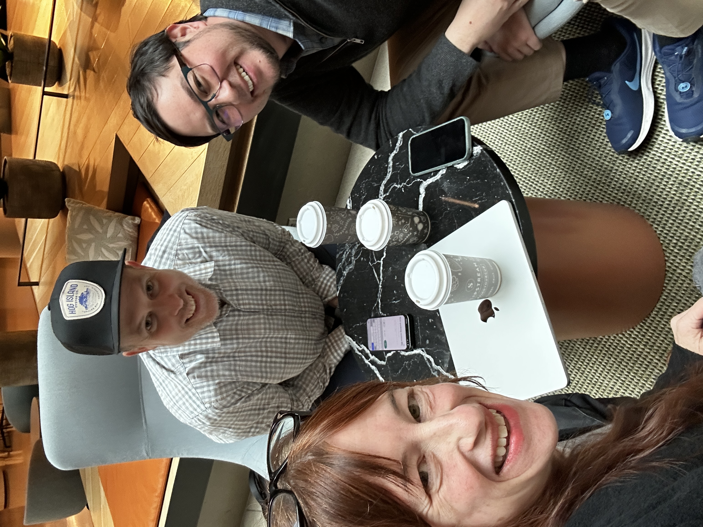

Who We Are
Three journalists who left major newsrooms to build the map that didn't exist.

Liz Kelly Nelson
Co-Founder | Founder, Project C
Liz built Project C — a community of 160+ creator-journalists — during a 2024 Sulzberger Fellowship at Columbia Journalism School, drawing on experience leading teams at Vox, USA Today, Gannett, and AOL. She sits on the board of Stanford's JSK Fellowship, advises the Beehiiv Media Collective, and is a 2025–2026 Terker Fellow at GWU's School of Media and Public Affairs.
Justin Bank
Co-Founder | Principal, Better Media Studios
Justin spent 20 years in senior roles at The Washington Post, The New York Times, and NPR — building audience teams, founding digital units, and working at the intersection of journalism and platform strategy. He runs Better Media Studios and writes about the creator economy for Project C.
Ryan Y. Kellett
Co-Founder | Audience Futurist
Ryan is a consultant and former news executive focused on audience behavior, platform dynamics, and sustainable news business models. He teaches at Harvard Extension School, is a Berkman Klein Center affiliate, and co-founded Going Solo — a course for journalists making the transition to independent work. Previously at Axios and The Washington Post.
James Bareham
Design Lead
James leads all visual design and product design for the Atlas. He brings a background in editorial design and digital product from a career spanning journalism, technology, and media — and is the principal at Happicamp.
Partners


Partner With Us
We're looking for organizations, platforms, and funders who want to build alongside creator journalists. Whether you're a newsroom exploring creator partnerships, a funder investing in journalism infrastructure, a platform seeking to support independent creators, or a PR team or brand looking for creator intelligence and distribution — we'd love to talk.
How We're Funded
The Journalism Atlas was bootstrapped to launch by our founding team—Ryan, Justin, and Liz. Today, we operate with a mix of philanthropic support, media partnerships, and strategic commercial collaborations.
Our funding model will evolve as we grow, but our principles won't: we don't take special interest money, we maintain full editorial independence, and we're transparent about who funds our work. No funder influences what we map, how we research, or what we publish.